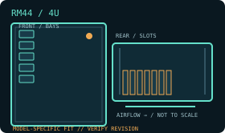

[ MODEL IDENTIFICATION // RM44 ]
SilverStone RM44 4U rackmount chassis
A 4U rack chassis with model-specific drive, PSU and expansion layouts. Match the enclosure revision, backplane and rail kit before installation.

MODEL NOTE: This record covers the RM44 only. Options, revision-dependent PSU support and installed bay modules may change fit; verify labels and the manufacturer manual before buying replacement parts.
Dimensions & fit specifications
| Rack units / external dimensions | 4U; 440 × 176 × 468 mm (W × H × D); 9.2 kg net. Reserve additional depth for rail travel and attached cables. |
|---|---|
| Motherboard compatibility | SSI-EEB, SSI-CEB, E-ATX, ATX, Micro-ATX and Mini-ITX. |
| PSU / power compatibility | PS/2 ATX, Mini Redundant, or 2U Redundant (V3.0 or later); PSU length up to 255 mm. Check the installed drive cage, power connectors and cable bend before fitting a long unit. |
| Drive bays / backplane | Two internal 3.5-inch drive positions (the space can instead accommodate three 2.5-inch drives) plus four additional 2.5-inch positions. No hot-swap backplane is included in the base layout. |
| Riser / PCIe | Eight standard-height PCI/PCIe expansion slots. Maximum GPU length is 424 mm without front fans/radiators; card retainer limits GPU width to 113 mm (154 mm with retainer removed). Verify card length after populating front cooling. |
| Cooling / service clearances | Front supports three 120 mm fans or up to a 360 mm radiator; two rear 80 mm fans are included. CPU cooler height is 137 mm with expansion-card retainer, 148 mm without. Front radiator/fans consume GPU clearance; maintain rear exhaust and rack service clearance. |
Compatibility & service notes
The shared 3.5/2.5-inch mounts are alternatives occupying the same drive space. The 424 mm GPU figure assumes no front fans/radiator. Use the optional rail holes and plan rear cable service space based on installed rail depth, not just the 468 mm case body.
- Measure the complete installed depth: chassis, rack ears/slides, cable-management arm if fitted, connectors and cable bend radius.
- Maintain clear front intake and rear exhaust access; do not obstruct removable fan, drive, PSU or backplane service paths.
- Before hot-swap work, confirm the controller/backplane interface and follow the chassis manual’s power-down and ESD procedure.
Manufacturer sources
- SilverStone — RM44 product specificationsManufacturer product specification page.
- SilverStone — RM44 product sheet (PDF)Manufacturer product sheet for bays, PSU and cooling limits.